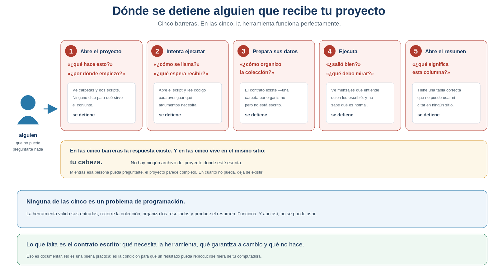
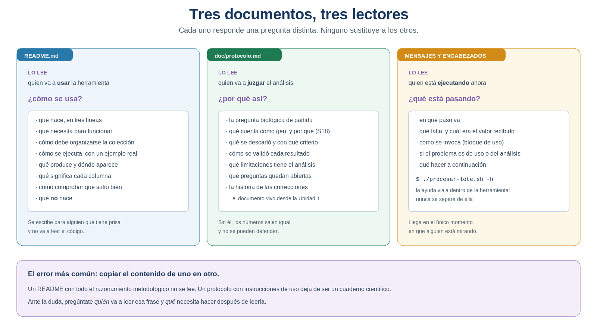
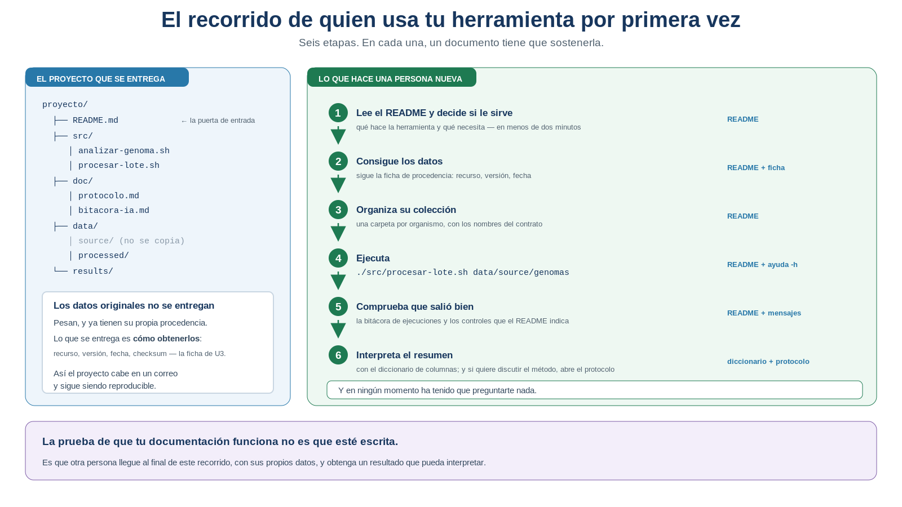

S27 — Entregar: de un script que funciona a una herramienta que otros usan
Antes de clase harás un experimento incómodo: entregar tu proyecto a un compañero sin poder hablar y anotar exactamente dónde deja de poder continuar. Durante el taller convertirás esa lista de barreras en documentación: el contrato escrito de tu herramienta, su ayuda integrada y sus mensajes. Después harás la prueba definitiva: ejecutar la herramienta de otra persona usando solo su documentación, y comprobar si obtienes su mismo resultado.
El primer intento es formativo: importa que registres las preguntas, no que las respondas.
Ficha del módulo
| Elemento | Descripción |
|---|---|
| Sesión | S27, 2 horas |
| Unidad | U5. Automatización de análisis bioinformáticos con Shell |
| Competencia principal | E. Automatización y scripting |
| Competencias integradas | A. Trabajo reproducible y comunicación científica; G. Uso responsable de la IA; C. Manejo de datos biológicos |
| Propósito | Convertir un flujo que funciona en tu proyecto en una herramienta que otra persona pueda entender, ejecutar y verificar sin tu intervención |
| Consulta previa del Plan | Los scripts de S24–S26 y buenas prácticas de documentación; este módulo es la lectura autocontenida de la sesión |
| Continuidad | S26 dejó un experimento que funciona para ti; S27 lo pone en manos de alguien más |
| Lectura indispensable | Secciones 1–7 de este módulo (~50 min) |
| Lectura de consulta | Taschuk & Wilson (2017), Ten simple rules for making research software more robust (~30 min); Sección 8 |
| Primer intento | Prácticas 1 y 2: el experimento del compañero y el contrato escrito, 40 min |
| Evidencia | Herramienta documentada, probada y reproducible: README.md, ayuda integrada, diccionario de salidas e informe de prueba cruzada |
| Tarea numerada | Avance del proyecto integrador. La evidencia final se entrega en S28 |
Aprendes a poner por escrito lo que hasta ahora solo estaba en tu cabeza, porque sin eso tu análisis no puede reproducirse fuera de tu computadora. No hay ni una construcción de shell nueva. Lo que cambia es a quién le hablas: hasta hoy tus scripts los leías tú.
Relación con lo que ya sabes
S26 S27
Analiza una colección entera → Y puede usarla alguien que no soy yo
"funciona en mi proyecto" "funciona en el proyecto de quien la reciba"S26 terminó pidiéndote un experimento: entregar el proyecto a un compañero, sin explicarle nada, y apuntar cada pregunta que te hiciera. Esa lista es el material de trabajo de hoy. No es una anécdota: es el diagnóstico, hecho por alguien que no puede engañarse sobre lo que entiende.
| Habilidad que ya tienes | Dónde la aprendiste | Qué cambia en S27 |
|---|---|---|
| El bloque de uso del script | S24, y ampliado en S25 | Se convierte en ayuda integrada, invocable sin abrir el archivo |
| «Una forma oficial de usarse» | S25, §4.1 | Deja de ser una idea y pasa a estar escrita |
| El contrato entre los datos y la herramienta | S26, §2.1 | Estaba implícito en tus carpetas; hoy se declara |
| La ficha de procedencia de U3 | U3, y la de la colección en S26 | Es lo que se entrega en lugar de los datos |
Mensajes de error por >&2 |
S25 | Ahora tienen que servirle a quien no escribió el código |
| El diccionario de variables | U1 | Vuelve, aplicado a las columnas de tu resumen |
doc/protocolo.md |
Desde U1 | Se le añade el apartado de decisiones de diseño |
Lo nuevo de hoy no es una técnica: es un cambio de destinatario.
Dónde estás en la Unidad 5
S24 GUARDAR el procedimiento ✔ resuelto
S25 SEPARARLO de sus datos ✔ resuelto
S26 REPETIRLO sin repetirte ✔ resuelto
▶ S27 ENTREGARLO a otra persona ← estás aquí
S28 INTEGRARLO todo
S29 ESCALARLO fuera de tu sesión| Pregunta de la unidad | En S27 |
|---|---|
| ¿Cómo aplico el análisis a una colección entera? | ✔ Resuelta en S26 |
| ¿Qué necesita saber otra persona antes de ejecutar mi herramienta? | ✔ Se resuelve hoy |
| ¿Cómo sabe esa persona si la ejecutó correctamente? | ✔ Se resuelve hoy |
| ¿Cómo distingue un error de uso de un error del análisis? | ✔ Se resuelve hoy |
| ¿Qué significan las salidas que produce? | ✔ Se resuelve hoy |
| ¿Cómo se demuestra todo junto, ante otras personas? | ☐ S28 |
Dónde estás en la investigación
S18 Seleccionar → qué evidencia cuenta
S19 Identificar → de qué objeto habla
S20 Normalizar → bajo qué representación se compara
S21 Confrontar → qué queda en pie ante una fuente ajena
S22 Cuantificar → cuánto importa lo que encontré
S23 Integrar → puede rehacerse entero
S24 Guardar → se rehace solo
S25 Separar → sirve para cualquier genoma
S26 Escalar → sirve para una colección
S27 Compartir → y puede usarla alguien más ← hoyResultados de aprendizaje
Al finalizar la sesión podrás:
- Identificar, a partir de una prueba con otra persona, en qué punto exacto un proyecto deja de poder usarse sin su autor.
- Formular el contrato de tu herramienta: qué necesita, qué garantiza y qué no hace.
- Distinguir qué información va al
README, cuál al protocolo y cuál a los mensajes del programa, y justificar el reparto. - Organizar el proyecto para entregarlo, decidiendo qué se copia y qué se documenta.
- Escribir un
READMEorientado a quien va a usar la herramienta, con un ejemplo ejecutable. - Documentar las salidas con un diccionario de columnas que permita interpretarlas y citarlas.
- Incorporar ayuda integrada a la herramienta, invocable sin abrir el archivo.
- Redactar mensajes que distingan un error de uso de un problema de los datos.
- Ejecutar la herramienta de otra persona usando solo su documentación, y evaluar si permite obtener el mismo resultado.
- Registrar las decisiones de diseño en el protocolo, explicando por qué la herramienta es como es.
Lista de verificación previa
Antes del taller comprueba que tienes:
La tentación es explicar «solo una cosita» cuando la otra persona se atasca. No lo hagas: cada vez que abres la boca, borras un dato. Lo que buscas es precisamente la lista de las cosas que crees obvias y no lo son.
Ruta de S27
| Momento | Qué hacer | Tiempo estimado |
|---|---|---|
| Antes de clase | El experimento del compañero y el contrato escrito (Prácticas 1 y 2). Leer las secciones 1–7 | 40 + 50 min |
| Taller (1.ª hora) | Organizar el proyecto para entregarlo y escribir el README (Prácticas 3 y 4) |
60 min |
| Taller (2.ª hora) | Ayuda integrada, mensajes y diccionario de salidas (Práctica 5) | 60 min |
| Después del taller | Prueba cruzada con otro equipo y documentación de las decisiones (Práctica 6) | 110 min |
Las secciones 1–7 son indispensables; la sección 8 es de consulta y sostiene el puente a S28.
Igual que en las sesiones anteriores: Concepto esencial, Concepto de apoyo y Consulta.
En el taller se escribe la documentación y se prueba a medias. La prueba cruzada de verdad —usar la herramienta de otro equipo— se hace después, porque necesita tiempo y necesita que la otra persona no esté al lado. El núcleo que no debe recortarse es:
localizar las barreras → escribir el contrato → probarlo con alguien que no lo escribió1. El experimento del compañero mudo [Indispensable]
Concepto esencial
Antes de leer nada más, haz el experimento que S26 dejó planteado. Es de los pocos que puedes hacer en este curso donde el resultado no depende de tu opinión.
1. Entrega tu proyecto a un compañero. Solo los archivos.
2. Pídele que analice una colección de genomas con tu herramienta.
3. No hables. No respondas preguntas. No señales nada en la pantalla.
4. Anota cada vez que se detiene, y qué pregunta iba a hacerte.El resultado es siempre el mismo, y por eso vale la pena vivirlo: se detiene enseguida, y no por un error de tu código.

Figura 27.1. Dónde se detiene alguien que recibe tu proyecto. En las cinco barreras la herramienta funciona perfectamente. Elaboración propia.
1.1 Lo que el experimento demuestra
Mira las cinco barreras y busca qué tienen en común. No es que falte código: tu herramienta valida sus entradas, recorre la colección, organiza los resultados y produce el resumen. Funciona.
Lo que falta es que la respuesta a cada pregunta esté escrita en alguna parte del proyecto. Hoy todas viven en el mismo sitio: tu memoria. Y eso tiene una consecuencia que va más allá de la comodidad de un compañero:
Un análisis que solo puede ejecutar su autor no es reproducible. Es repetible por una persona, que no es lo mismo.
Y conviene decir quién es, en la práctica, esa «otra persona». A veces es un compañero, o quien revisa tu trabajo, o alguien que encuentra tu proyecto publicado. Pero la mayoría de las veces, en investigación real, esa otra persona eres tú dentro de seis meses: cuando vuelvas a este proyecto después del semestre, de unas vacaciones o de una tesis distinta, no recordarás nada de lo que hoy te parece obvio. Documentar no es un favor que le haces a un desconocido: es el único mensaje que puedes dejarle a tu yo futuro, que llegará sin poder preguntarte nada.
Llevas desde la Unidad 1 persiguiendo la reproducibilidad, y en cada unidad has cerrado una brecha: documentaste el razonamiento (U1), demostraste la procedencia de los datos (U3), integraste el procedimiento (S23), lo hiciste ejecutable (S24). La brecha que queda es la última, y es de otra naturaleza: el conocimiento tácito de quien lo construyó.
1.2 La pregunta de hoy
¿Qué necesita saber otra persona para obtener mis mismos resultados, sin poder preguntarme nada?
Fíjate en que no es «¿cómo escribo un buen README?». Es una pregunta sobre qué información hace falta, y solo después sobre dónde ponerla. Por eso la sesión empieza con un experimento y no con una plantilla.
IDEA CLAVE. Documentar no es una buena práctica que se añade al final por prolijidad. Es lo que convierte un resultado tuyo en un resultado verificable por otros — que es la definición operativa de un resultado científico.
Práctica 1 — El experimento del compañero mudo (antes de clase, primer intento)
Pregunta metodológica. ¿En qué punto exacto mi proyecto deja de poder usarse sin mí?
Objetivo. Obtener el diagnóstico de alguien que no puede engañarse sobre lo que entiende.
Haz esta práctica antes de leer las secciones 2 a 7. Si las lees primero, ya sabrás qué te va a pasar y el experimento pierde su valor.
Antes de clase.
Entrega tu proyecto a un compañero: los archivos y nada más. Ni un mensaje de contexto.
Pídele una tarea concreta: «analiza esta colección de genomas con mi herramienta y dime cuántos genes tiene cada organismo».
Guarda silencio. No expliques, no señales, no corrijas. Si te pregunta, anota la pregunta y responde que no puedes contestar.
Registra el recorrido, sin interpretarlo todavía:
# Qué intentaba hacer Dónde se detuvo Qué pregunta iba a hacerme ¿Dónde debería haber estado esa respuesta? Anota cuánto tardó en detenerse la primera vez. Ese dato suele ser humillante y es el más útil.
Clasifica cada barrera en una de estas tres: no sabía qué hace, no sabía cómo usarlo, no sabía si estaba bien.
Responde por escrito: de todas las cosas que tu compañero no sabía, ¿cuántas te parecían obvias antes del experimento?
Producto esperado. La tabla de barreras, con al menos cuatro filas reales.
Criterio de logro: el registro es de lo que ocurrió, no de lo que crees que falta; y hay al menos una barrera que no habías previsto.
2. Documentar es escribir el contrato [Indispensable]
Concepto esencial
En S26 apareció una idea que se quedó a medias: la estructura de la colección forma parte del contrato entre los datos y la herramienta. Ese contrato existía y funcionaba… porque las dos partes eras tú.
Hoy hay una segunda parte que no eres tú, y un contrato con una sola parte informada no es un contrato: es una suposición.
Todo contrato de una herramienta tiene tres apartados, y conviene escribirlos en este orden:
| Apartado | Qué declara | Ejemplo en tu herramienta |
|---|---|---|
| Qué necesita | Las condiciones que quien la usa debe cumplir | Una carpeta por organismo, con genome.fna y annotation.gff3; ejecutarla desde la raíz del proyecto |
| Qué garantiza | Lo que produce si esas condiciones se cumplen | Una carpeta de resultados por organismo, una bitácora con una fila por ejecución y un resumen con una fila por organismo correcto |
| Qué NO hace | Los límites, declarados por ti antes de que nadie los descubra | No comprueba que el FASTA y el GFF3 correspondan al mismo organismo; no interpreta; no detecta anotaciones de versiones distintas |
2.1 El tercer apartado es el más científico
Los dos primeros son de sentido común. El tercero es el que distingue una herramienta científica de un programa.
Piensa en cualquier método de laboratorio: su descripción incluye siempre su rango de validez, sus interferencias y sus falsos positivos. Un método presentado como infalible no es más potente, es menos utilizable, porque quien lo aplica no sabe cuándo desconfiar.
Con tu herramienta pasa igual. Si alguien le pasa el FASTA de un organismo y el GFF3 de otro, tu herramienta funcionará —los dos archivos existen, los dos son válidos— y producirá un resumen completamente falso. Que eso esté escrito en el apartado qué no hace no es una confesión de debilidad: es lo que impide que alguien publique ese número.
IDEA CLAVE. Declarar los límites de tu herramienta es exactamente el mismo gesto que declarar las limitaciones de tu análisis, que llevas haciendo desde S12. La herramienta hereda la honestidad del protocolo.
Los principios FAIR para software de investigación (Barker et al., 2022) exigen que sea reutilizable, y la reutilización tiene un requisito previo y bastante prosaico: que esté descrito. Un código disponible pero indescifrable cumple con «accesible» y falla en todo lo demás. Es la misma lógica con la que en U3 rechazabas un archivo sin procedencia.
Práctica 2 — Escribir el contrato (antes de clase, primer intento)
Pregunta metodológica. ¿Qué necesita mi herramienta, qué garantiza a cambio y qué no hace?
Objetivo. Redactar el contrato antes de redactar ninguna documentación.
Antes de clase. En doc/s27-primer-intento.md:
Escribe los tres apartados del contrato (Sección 2), con el detalle suficiente para que alguien pueda cumplirlos sin verte:
Qué necesita Qué garantiza Qué NO hace … … … Comprueba la cobertura. Recorre las barreras de la Práctica 1 una por una: ¿el contrato resuelve cada una? Las que no, o falta declararlas, o no son del contrato sino de la ayuda.
Busca al menos tres límites reales para el tercer apartado. Pistas: ¿qué pasa si el FASTA y el GFF3 son de organismos distintos? ¿Y si la anotación viene de otra versión? ¿Interpreta la herramienta algo, o solo cuenta?
Redacta el diccionario de columnas de tu
resumen-global.tsv, con las cuatro columnas de la Sección 5.2 —incluida cómo se obtuvo—.Reparte la información entre los tres documentos de la Sección 3: para cada dato de tu contrato, di si va al
README, al protocolo o a los mensajes, y por qué.
Producto esperado. El contrato en tres apartados, el diccionario de columnas y el reparto entre documentos.
Criterio de logro: el apartado qué no hace tiene al menos tres límites reales, y cada barrera de la Práctica 1 tiene un sitio asignado.
3. Tres documentos, tres lectores [Indispensable]
Concepto esencial
Con el contrato claro, queda decidir dónde se escribe cada cosa. Y aquí está el error que más ordena —o desordena— el trabajo de hoy: no todo va al mismo sitio, porque no todo lo lee la misma persona.

Figura 27.2. Tres documentos, tres lectores. Ante la duda, pregúntate quién va a leer esa frase y qué necesita hacer después de leerla. Elaboración propia.
Si de esta sesión te llevas una sola cosa, que sea este reparto:
README → quien va a USAR → ¿cómo se usa?
Protocolo → quien va a JUZGAR → ¿por qué así?
Mensajes → quien está EJECUTANDO → ¿qué está pasando?| Documento | Lo lee | Responde | Y no contiene |
|---|---|---|---|
README.md |
Quien va a usar la herramienta | ¿cómo se usa? | El razonamiento metodológico |
doc/protocolo.md |
Quien va a juzgar el análisis | ¿por qué así? | Instrucciones de instalación |
| Mensajes y encabezados | Quien está ejecutando ahora | ¿qué está pasando? | Explicaciones largas |
IDEA CLAVE. Este reparto ahorra más trabajo del que parece. La mayoría de las horas que se pierden documentando se van en escribir dos veces lo mismo, en el sitio equivocado, para nadie en particular. Decidir el lector antes de escribir la frase resuelve casi todas las dudas de la sesión.
3.1 Por qué no basta con el protocolo
Es la objeción razonable: «si mi protocolo lo explica todo, ¿para qué otro documento?».
Porque responden preguntas distintas, en momentos distintos, a personas con prisas distintas. Alguien que quiere ejecutar tu herramienta necesita cinco datos concretos y los necesita ahora; si para encontrarlos tiene que leer treinta páginas de razonamiento metodológico, no los encontrará. Y a la inversa: alguien que revisa la validez de tu análisis no quiere saber cómo se instala.
Copiar secciones del protocolo dentro del README. El resultado es un documento que nadie lee y que además se desincroniza: cuando corrijas una decisión en el protocolo, la copia del README seguirá diciendo lo viejo. Una información, un sitio. Si hace falta, se enlaza.
3.2 El único solapamiento legítimo
Hay una cosa que sí aparece en los tres: la forma de invocar la herramienta. En el encabezado del script, en la ayuda integrada y en el README. No es duplicación gratuita: es la información que se necesita justo en el momento en que se está mirando cada uno de esos tres sitios.
4. Qué se entrega y qué se documenta [Indispensable]
Concepto esencial
Antes de escribir, hay que decidir qué es el proyecto que se entrega. Y la respuesta tiene una sorpresa.

Figura 27.3. El recorrido de quien usa tu herramienta por primera vez. La prueba de que la documentación funciona es que alguien llegue al final sin preguntar nada. Elaboración propia.
4.1 Los datos originales no se entregan
Parece contradictorio con todo lo que llevas hecho, y no lo es:
| Qué se entrega | Qué no se entrega |
|---|---|
README.md, src/, doc/ |
data/source/ — los originales |
La estructura vacía de data/ y results/ |
Los resultados de tus ejecuciones |
| La ficha de procedencia de la colección | Los archivos que esa ficha describe |
Las razones son tres, y las dos primeras son prácticas: los genomas pesan, y ya están publicados en un recurso que los mantiene mejor que tú. La tercera es de fondo:
Los datos originales ya tienen su propia procedencia, documentada desde U3. Entregar una copia tuya sin esa ficha crea un duplicado sin trazabilidad — exactamente lo que la Unidad 3 enseñaba a evitar.
Lo que se entrega, entonces, es cómo obtenerlos: recurso, versión, fecha, identificador y checksum. Con eso, quien reciba tu proyecto puede reconstruir la colección exacta. Y el proyecto cabe en un correo.
Si tus datos no están publicados —porque los generó tu grupo, o porque son una selección tuya que no existe en ningún recurso—, entonces sí forman parte de la entrega, y necesitan su propia ficha. La regla no es «nunca entregar datos»: es no duplicar sin procedencia.
4.2 La estructura final
Es la misma de siempre —la de Noble (2009), desde U1— con una pieza nueva en la raíz:
proyecto/
├── README.md ← la puerta de entrada; hoy no existía
├── src/
│ ├── analizar-genoma.sh
│ └── procesar-lote.sh
├── doc/
│ ├── protocolo.md
│ └── bitacora-ia.md
├── data/
│ ├── source/ ← se describe, no se copia
│ └── processed/
└── results/Que el README esté en la raíz no es una convención arbitraria: es el primer archivo que alguien ve al abrir el proyecto, y por eso es el único sitio donde tiene sentido poner la puerta de entrada.
Práctica 3 — Preparar el proyecto para entregarlo (durante el taller)
Pregunta metodológica. ¿Qué es exactamente lo que se entrega, y qué se describe en su lugar?
Objetivo. Dejar el proyecto en un estado en el que quepa en un correo y siga siendo reproducible.
Pasos.
Revisa la estructura contra la de la Sección 4.2 y corrige lo que se haya desviado desde U1.
Decide, archivo por archivo, qué se entrega. Construye la tabla:
Elemento ¿Se entrega? Si no, ¿cómo se obtiene? data/source/genomas/no Ficha de procedencia: recurso, versión, fecha, checksum … … … Comprueba que la ficha de procedencia basta. Toma un organismo al azar y sigue tu propia ficha: ¿podrías volver a descargar exactamente ese archivo? Si te falta la versión, la fecha o el identificador, la ficha está incompleta.
Limpia el proyecto de archivos temporales, pruebas rotas y copias de trabajo. Todo lo que no sea código, documentación o resultados declarados estorba a quien lo reciba.
Comprueba que la herramienta sigue funcionando después de la limpieza. Es el momento clásico para haber borrado algo necesario.
Producto esperado. El proyecto reorganizado y la tabla de qué se entrega.
Criterio de logro: el proyecto no contiene datos originales duplicados, la ficha permite recuperarlos y la herramienta sigue ejecutándose.
5. El README, escrito para quien tiene prisa [Indispensable]
Concepto esencial
Ahora sí. Tienes las barreras del experimento y tienes el contrato: el README es el documento que las cierra, en el orden en que aparecen.
Ocho apartados, ninguno largo. Y se leen en dos momentos distintos, que conviene separar también al escribirlos:
INFORMACIÓN PARA COMENZAR INFORMACIÓN PARA INTERPRETAR
se lee antes de ejecutar se lee con los resultados delante
apartados 1–5 apartados 6–8Grupo 1 — Información para comenzar
| Apartado | Cierra la barrera | Regla práctica |
|---|---|---|
| 1. Qué hace | «¿qué es esto?» | Tres líneas. Una pregunta biológica, no una lista de comandos |
| 2. Qué necesita | «¿puedo usarlo?» | Sistema, intérprete, y nada más — no inventes requisitos |
| 3. Cómo se organizan los datos | «¿cómo preparo la colección?» | El contrato de S26, con un árbol de ejemplo |
| 4. De dónde salen los datos | «¿de dónde los saco?» | La ficha de procedencia, o cómo descargarlos |
| 5. Cómo se ejecuta | «¿cómo se llama?» | Un ejemplo copiable y real, no un esquema |
Grupo 2 — Información para interpretar
| Apartado | Cierra la barrera | Regla práctica |
|---|---|---|
| 6. Qué produce | «¿dónde están los resultados?» | Un árbol de salida y el diccionario de columnas |
| 7. Cómo comprobar que salió bien | «¿salió bien?» | Los controles de S26: la bitácora y las cardinalidades |
| 8. Qué no hace | (la que nadie pregunta a tiempo) | Los límites del contrato |
La división no es decorativa. Alguien que evalúa si tu herramienta le sirve lee solo el primer grupo, y lo hace de pie, con prisa. El segundo lo lee después, sentado y con una tabla de resultados abierta. Escribe cada grupo pensando en esa postura.
5.1 El ejemplo tiene que ser ejecutable
Concepto esencial
De los ocho apartados, el que más se estropea es el ejemplo. Compara:
✗ Uso: procesar-lote.sh [directorio]
✓ ./src/procesar-lote.sh data/source/genomas
Analiza los doce genomas del directorio y deja los resultados en results/.
Tarda unos dos minutos.El primero obliga a interpretar; el segundo se copia y se pega. Y la segunda línea añade algo que nadie documenta y todo el mundo agradece: cuánto tarda, que es lo que permite distinguir «está trabajando» de «se colgó».
5.2 El diccionario de las salidas
Concepto esencial
Aquí vuelve algo de la Unidad 1: un archivo de datos sin diccionario de variables no es utilizable. Tu resumen-global.tsv es exactamente eso, y hasta hoy solo tú sabes qué significan sus columnas.
| Columna | Qué contiene | Unidad | Cómo se obtuvo |
|---|---|---|---|
organismo |
Nombre de la carpeta de la colección | — | El nombre que tú le diste |
tipos |
Número de tipos distintos de feature | recuento | Líneas del inventario |
genes |
Registros de tipo gene en la anotación |
recuento | Columna 3 del GFF3, criterio de S18 |
cds |
Registros de tipo CDS |
recuento | Columna 3 del GFF3 |
La columna «cómo se obtuvo» es la que convierte la tabla en evidencia. Sin ella, genes es un número; con ella, es un dato con procedencia y con criterio — y quien lo lea sabrá que no es «el número de genes del organismo», sino «el número de registros anotados como gen con este criterio».
IDEA CLAVE. Una tabla de resultados sin diccionario no se puede citar. Y algo que no se puede citar no ha entrado todavía en la conversación científica.
Práctica 4 — El README (durante el taller)
Pregunta metodológica. ¿Puede alguien saber, en dos minutos, si esta herramienta le sirve y cómo usarla?
Objetivo. Escribir el documento que cierra las barreras del experimento.
Parte A — Escribir
- Crea
README.mden la raíz del proyecto, con los ocho apartados de la Sección 5. - Empieza por el final: escribe primero qué no hace, con los límites de la Práctica 2. Es el apartado que más cuesta y el que da el tono honesto al resto.
- Escribe el ejemplo de ejecución copiando de tu terminal, no de memoria. Y añade cuánto tarda.
- Incluye el diccionario de columnas de la Práctica 2.
- Añade el apartado de comprobación: los controles de cardinalidad de S26, explicados para quien no los diseñó.
Parte B — Podar
- Relee el README con una sola pregunta: ¿esta frase le sirve a alguien que quiere ejecutar la herramienta? Si la respuesta es «no, pero es interesante», va al protocolo.
- Busca duplicaciones con el protocolo y sustitúyelas por un enlace.
- Cuenta las líneas. Si supera las cien, casi seguro que estás explicando el método.
Parte C — Comprobar contra el experimento
- Recorre la tabla de barreras de la Práctica 1 y marca, para cada una, en qué apartado del README queda resuelta. Las que no queden resueltas en ninguno, resuélvelas ahora.
Producto esperado. README.md completo, y la tabla de barreras con su apartado asignado.
Criterio de logro: cada barrera del experimento tiene una respuesta escrita, y el README no contiene razonamiento metodológico.
6. La ayuda que viaja con la herramienta [Indispensable]
Concepto esencial
Un README se separa del script en cuanto alguien copia el archivo a otro sitio. La ayuda integrada no: viaja dentro de la herramienta, y está disponible justo en el momento en que alguien está frente a la terminal sin saber qué hacer.
Sintaxis mínima
if [ "$1" = "-h" ] || [ "$1" = "--help" ]; then
echo "procesar-lote.sh — analiza una colección de genomas"
echo
echo "Uso: $0 <directorio-de-la-coleccion>"
echo
echo "La colección debe tener una carpeta por organismo, y dentro de cada una:"
echo " genome.fna el genoma en formato FASTA"
echo " annotation.gff3 su anotación en formato GFF3"
echo
echo "Resultados en results/s26/ — ver README.md"
exit 0
fi¿Qué hace? Si el primer argumento es -h o --help, imprime cómo se usa la herramienta y termina sin analizar nada.
¿Por qué aparece en esta sesión? Porque es la respuesta a la barrera 2 del experimento, entregada en el sitio donde aparece la pregunta.
Dos detalles que valen la pena:
||significa «o»: la condición se cumple con cualquiera de las dos formas. Es la única construcción nueva de la sesión, y aparece porque quien no conoce tu herramienta probará las dos.exit 0, noexit 1. Pedir ayuda no es un error. El código de salida es un dato honesto sobre lo que pasó: si dijeras1, un lote que llame a tu herramienta creería que falló.
Escribe la ayuda como si fuera un cartel, no un manual: lo que cabe en una pantalla sin desplazarse. Todo lo que no quepa, va al README, y la ayuda lo menciona.
6.1 Mensajes que dicen de quién es el problema
Concepto esencial
Hay una distinción que quien usa tu herramienta necesita hacer en cuanto algo va mal, y que solo tú puedes darle:
| Clase de problema | De quién es | Qué debe hacer quien lo ve |
|---|---|---|
| Error de uso | De quien la invoca | Corregir la invocación o la organización de sus datos |
| Problema de los datos | Del archivo | Revisar ese organismo; el resto del análisis sigue siendo válido |
| Fallo de la herramienta | Tuyo | Avisarte |
Un mensaje que no distingue las tres deja a la persona bloqueada, porque no sabe hacia dónde mirar. Compara:
✗ Error: no se pudo procesar.
✓ ERROR DE USO: se esperaba 1 argumento y llegaron 0.
Uso: ./src/procesar-lote.sh <directorio-de-la-coleccion>
✓ AVISO: el organismo 'vibrio' no tiene annotation.gff3; queda registrado
como fallo en results/s26/ejecuciones.tsv. El lote continúa.El segundo dice qué corregir. El tercero dice de quién es el problema, dónde queda constancia y que no hace falta alarmarse por el resto — que es exactamente lo que S26 estableció y hasta ahora solo sabías tú.
Práctica 5 — La ayuda y los mensajes (durante el taller)
Pregunta metodológica. ¿Cómo sabe quien ejecuta mi herramienta qué está pasando y de quién es el problema?
Objetivo. Poner la información en el momento en que hace falta.
Parte A — Ayuda integrada
- Añade el bloque
-h/--helpaprocesar-lote.sh, con lo que cabe en una pantalla. - Comprueba las dos formas y verifica que el código de salida es 0. Explica en una línea por qué no debe ser 1.
- Añádelo también a
analizar-genoma.sh. Las dos herramientas se pueden invocar por separado.
Parte B — Mensajes que orientan
- Clasifica todos tus mensajes de error en las tres clases de la Sección 6.1: error de uso, problema de los datos, fallo de la herramienta.
- Reescribe los que no dejen clara su clase. Un mensaje útil dice qué pasó, con qué valor y qué hacer ahora.
- Comprueba que el aviso de un organismo fallido tranquiliza: debe decir que queda registrado y que el lote continúa. Quien no diseñó el flujo no tiene por qué saberlo.
Parte C — Probar en frío
- Cierra el README y ejecuta tu herramienta usando solo la ayuda integrada. ¿Te bastó? Lo que te faltó, o va a la ayuda, o la ayuda debe decir dónde encontrarlo.
- Pásale una entrada mala a propósito y lee el mensaje como si no fueras tú. ¿Sabrías qué hacer?
Producto esperado. Ayuda integrada en las dos herramientas y la tabla de mensajes clasificados.
Criterio de logro: la ayuda cabe en una pantalla, termina con código 0, y cada mensaje de error permite saber de quién es el problema.
7. Probar la documentación, no la herramienta [Indispensable]
Concepto esencial
Tu herramienta ya está probada: lo hiciste en S25 y S26. Lo que no está probado es lo que has escrito hoy, y se prueba de una sola manera:
Alguien que no la escribió intenta usarla con solo la documentación, y se comprueba si obtiene el resultado esperado.
Es la prueba cruzada de la Práctica 6, y es la evidencia central de la sesión. Fíjate en su estructura, porque es la de cualquier validación del curso: hay una expectativa declarada, un procedimiento independiente y una comparación.
| Elemento de la prueba | En la prueba cruzada |
|---|---|
| Qué se pone a prueba | La documentación, no el código |
| Quién la ejecuta | Alguien que no la escribió y no puede preguntar |
| Qué se compara | ¿Obtuvo el mismo resumen que su autor, con los mismos datos? |
| Qué cuenta como fallo | Cada pregunta que tuvo que hacer |
7.1 Los tres desenlaces posibles
Concepto de apoyo
| Desenlace | Qué significa | Qué se corrige |
|---|---|---|
| Llega al final y obtiene el mismo resumen | La documentación cumple su contrato | Nada; se anota como prueba superada |
| Llega al final con otro resultado | Falta una condición en el contrato: hizo algo distinto creyendo hacer lo mismo | El apartado qué necesita |
| Se detiene antes | Falta información en el punto donde se detuvo | Ese apartado concreto |
El segundo desenlace es el más interesante y el que más se aprende. Que dos personas ejecuten «la misma» herramienta y obtengan resultados distintos significa que el procedimiento tenía un grado de libertad que nadie había declarado — y encontrarlo así, en clase, es infinitamente mejor que encontrarlo cuando alguien cuestione tus resultados.
IDEA CLAVE. No preguntes a tu compañero si tu documentación «se entiende». Pídele que la use, y cuenta las veces que tiene que preguntarte. Ese número es la única medida honesta de lo bien documentada que está tu herramienta.
7.2 El ciclo no se cierra: gira
Concepto de apoyo
La prueba cruzada no es un trámite que se aprueba una vez. Es una vuelta de un ciclo que, en un proyecto real, no deja de dar vueltas:
mi proyecto
↓
lo usa otra persona
↓
las preguntas que necesita hacer
↓
la documentación que faltaba
↓
la nueva versión
↓
otra prueba, con alguien distinto
↓
(y otra vez)Cada vuelta con una persona nueva encuentra cosas que la anterior no encontró, porque cada quien llega con supuestos distintos: otro sistema, otra forma de organizar sus datos, otra idea de qué es evidente.
IDEA CLAVE. Una herramienta científica nunca está terminada: cada nueva prueba cruzada puede revelar un supuesto que todavía no estaba documentado. No es un defecto del trabajo — es lo que significa mantener un instrumento que otras personas usan.
Práctica 6 — La prueba cruzada (después del taller)
Pregunta metodológica. ¿Puede otra persona obtener exactamente mi mismo resumen global usando únicamente mi documentación?
Objetivo. Poner a prueba la documentación con el único método válido: que la use quien no la escribió.
Esta práctica recorre una vuelta completa. Las partes A y B las haces sobre el proyecto de otro equipo; la parte C, sobre el tuyo, con el informe que recibas.
mi proyecto → mi compañero → las preguntas → la documentación → la nueva versión → nueva prueba
(A) (A) (B) (C) (C) (y otra vez)Parte A — Usar la herramienta de otro equipo
Recibe el proyecto de otro equipo y su ficha de procedencia. Nada más: no puedes preguntar.
Recorre las seis etapas de la Figura 27.3, anotando el tiempo de cada una.
Registra cada tropiezo:
# Etapa Qué faltaba ¿Pude seguir? Qué habría bastado Ejecuta la herramienta y compara tu resumen con el que ese equipo obtuvo. Usa la estrategia que corresponda: checksum si esperas identidad byte a byte, comparación fila a fila si no.
Si el resultado difiere, no lo arregles: diagnostícalo. Es el desenlace más informativo (Sección 7.1): significa que el contrato tenía un grado de libertad sin declarar. Escribe cuál.
Parte B — Devolver el informe
- Entrega al otro equipo un informe breve con: dónde te detuviste, cuántas preguntas habrías tenido que hacer, si obtuviste su mismo resultado y qué apartado habría bastado para resolver cada tropiezo. Sé concreto y no seas amable a costa de ser útil.
Parte C — Corregir con el informe que recibas
- Lee el informe sobre tu herramienta sin defenderla. Cada pregunta que tuvo que hacer tu compañero es un apartado que falta, no un despiste suyo.
- Corrige la documentación y anota qué cambiaste.
- Actualiza
doc/protocolo.mdcon la sección de S27 (plantilla en la Sección 9), incluidas las decisiones de diseño: por qué la herramienta espera esa estructura y no otra, por qué el lote continúa ante un fallo, por qué los datos no se entregan.
Producto esperado. El informe de la prueba cruzada que emitiste, el que recibiste, la documentación corregida y la sección S27 del protocolo.
Criterio de logro: la prueba está registrada con su resultado —llegó al final, llegó con otro resultado, o se detuvo— y cada tropiezo del informe recibido tiene una corrección concreta.
8. Documentado no es todavía demostrado [Consulta]
Al terminar tendrás una herramienta que otra persona puede usar. Es un logro real y el objetivo de la sesión.
Y queda una última cosa, que no es técnica:
tienes → una herramienta que funciona (S24–S26)
→ documentada y probada por otros (S27)
falta → reunirlo todo y sostenerlo ante otras personasEn S28 no vas a construir nada nuevo. Vas a integrar el recorrido completo —de los comandos sueltos de la Unidad 4 a la herramienta de hoy—, ejecutarlo con datos que no has visto y explicar por qué cada decisión es como es. Es la evidencia integradora de la unidad, y sustituye al examen práctico.
| Hoy | En S28 |
|---|---|
| La herramienta se puede usar | La herramienta se demuestra |
| Se prueba con la colección de un compañero | Se ejecuta con datos nuevos |
| La documentación responde preguntas escritas | Tú respondes preguntas en directo |
| El protocolo registra las decisiones | Tú las justificas |
IDEA CLAVE. La diferencia entre S27 y S28 es la que hay entre tener un resultado y sostenerlo. Lo primero se escribe; lo segundo se argumenta.
9. Documentar: la sección del protocolo [Indispensable]
Agrega a doc/protocolo.md, después de la sección de S26. No sustituye a ninguna anterior.
## S27 — Publicación de la herramienta
### 1. Propósito
Qué problema científico resuelve esta herramienta y para quién puede ser útil.
### 2. El contrato
| Qué necesita | Qué garantiza | Qué NO hace |
| --- | --- | --- |
| … | … | … |
### 3. Requisitos y forma de ejecución
Sistema, intérprete, desde dónde se ejecuta, e invocación con un ejemplo real.
### 4. Estructura esperada de la entrada
El árbol de la colección y por qué esa estructura y no otra.
### 5. Organización de las salidas y diccionario
| Columna | Qué contiene | Unidad | Cómo se obtuvo |
| --- | --- | --- | --- |
| … | … | … | … |
### 6. Cómo verificar que funcionó
Los controles de S26, con su igualdad esperada, redactados para quien no los diseñó.
### 7. Decisiones de diseño
| Decisión | Alternativa descartada | Por qué |
| --- | --- | --- |
| El lote continúa ante un fallo | Detenerse | Un dato incompleto no invalida a los demás (S26) |
| Los datos originales no se entregan | Copiarlos | Ya tienen procedencia propia; duplicar sin ficha rompe la trazabilidad (U3) |
| La definición de gen no es un parámetro | Hacerla configurable | Un procedimiento que admite cualquier criterio no responde una pregunta (S25) |
| … | … | … |
### 8. Prueba cruzada
| Qué se probó | Quién | Resultado | Preguntas que necesitó | Correcciones aplicadas |
| --- | --- | --- | --- | --- |
| La documentación | Equipo … | llegó al final / otro resultado / se detuvo | … | … |
### 9. Limitaciones de la herramienta
Las del contrato, y las que la prueba cruzada haya revelado.
### 10. Nuevas preguntas que abreEl README dice cómo es la herramienta; las decisiones de diseño dicen por qué es así y qué se descartó. Sin ellas, quien la herede repetirá tus errores o deshará tus aciertos sin saber cuáles eran.
Evidencia de la sesión
Entrega o conserva, según indique el docente:
doc/s27-primer-intento.mdcon la tabla de barreras y el contrato (Prácticas 1 y 2);- el proyecto reorganizado y la tabla de qué se entrega;
README.mdcon sus ocho apartados y el diccionario de columnas;- la ayuda integrada en las dos herramientas;
- la tabla de mensajes clasificados por clase de problema;
- el informe de prueba cruzada que emitiste y el que recibiste;
- la lista de correcciones aplicadas tras la prueba;
doc/bitacora-ia.mdactualizada;- la sección S27 de
doc/protocolo.md, con todas las anteriores intactas.
Errores frecuentes y estrategias de diagnóstico
| Error | Por qué ocurre | Estrategia de diagnóstico |
|---|---|---|
| Explicar «solo una cosita» durante el experimento | Da apuro ver a alguien atascado | Cada explicación borra un dato; anotar y callar |
| Escribir el README antes del experimento | Parece más eficiente | Se documenta lo que uno cree que falta, no lo que falta |
| Copiar el protocolo dentro del README | «Así está todo junto» | Nadie lo lee y se desincroniza; una información, un sitio |
| Un README de trescientas líneas | Se explica el método | Podar con la pregunta: ¿le sirve a quien va a ejecutar? |
| El ejemplo de uso es un esquema con corchetes | Parece más general | No se puede copiar y pegar; poner una orden real |
| Requisitos inventados | Se copian de otros proyectos | Declarar solo lo que tu herramienta usa de verdad |
| No documentar cuánto tarda | No parece información | Es lo que distingue «trabajando» de «colgado» |
| Un resumen sin diccionario de columnas | Los nombres parecen evidentes | genes no es «los genes del organismo»: hay un criterio detrás |
| Falta el apartado qué no hace | Parece admitir debilidad | Es lo que impide que alguien publique un número inválido |
La ayuda -h termina con exit 1 |
Se copió del bloque de error | Pedir ayuda no es un error; un lote lo interpretaría como fallo |
| Entregar copias de los datos originales | «Así está completo» | Duplica sin procedencia; entregar la ficha, no los archivos |
| Entregar resultados de tus ejecuciones | Parecen parte del trabajo | Quien la use generará los suyos; los tuyos confunden |
| Mensajes que no dicen de quién es el problema | Quien los escribió ya lo sabe | Clasificarlos: uso / datos / herramienta |
| Tratar el informe de la prueba cruzada como una crítica | Duele que no se entienda | Cada pregunta que necesitó es un apartado que falta |
| «Es que no leyó bien» | La información estaba… en algún sitio | Si hubo que buscarla, no estaba donde hacía falta |
| Aceptar el README que propone una IA | Está bien escrito | No conoce tu contrato ni tus límites: comprobar que permite ejecutar de verdad |
Rúbricas
| Criterio | Logrado | Parcialmente logrado | Aún no logrado |
|---|---|---|---|
| El experimento | Registra barreras reales, con lo que ocurrió y dónde | Lo hace y lo interpreta sobre la marcha | Escribe lo que cree que falta, sin probar |
| El contrato | Los tres apartados, con al menos tres límites reales | Necesita y garantiza; sin límites | No distingue lo que exige de lo que ofrece |
| Reparto entre documentos | Cada información en un solo sitio, con enlaces | Alguna duplicación | El README repite el protocolo |
| Proyecto entregable | Sin datos duplicados; la ficha permite recuperarlos | Entrega los datos sin ficha | Entrega todo mezclado, con archivos temporales |
| README | Ocho apartados, ejemplo copiable, cierra todas las barreras | Le faltan apartados o el ejemplo es un esquema | Es una lista de comandos |
| Diccionario de salidas | Incluye unidad y cómo se obtuvo cada columna | Solo nombres y descripciones | No hay diccionario |
| Ayuda integrada | En las dos herramientas, cabe en pantalla, termina con 0 | Existe pero devuelve código de error | No hay ayuda |
| Mensajes | Distinguen error de uso, de datos y de la herramienta | Informan sin clasificar | Genéricos |
| Prueba cruzada | Ejecutada, con informe concreto y resultado registrado | Se probó sin registrar el resultado | No se probó con nadie |
| Decisiones de diseño | Cada una con su alternativa descartada y su motivo | Se listan sin justificar | No se registran |
| Uso crítico de IA | Detecta información inventada o innecesaria y lo demuestra probando | Compara sin probar | Adopta el texto propuesto |
La rúbrica es formativa. La evidencia integradora de la unidad se cierra en S28.
Autoevaluación
Comprobación rápida — formativa, al final del taller
- ¿Por qué un análisis que solo puede ejecutar su autor no es reproducible?
- ¿Cuáles son los tres apartados de un contrato, y cuál es el más difícil de escribir?
- ¿Por qué el apartado qué no hace es el más científico de los tres?
- ¿Qué pregunta responde el README y cuál el protocolo?
- ¿Qué información aparece legítimamente en los tres documentos?
- ¿Por qué no se entregan los datos originales, y qué se entrega en su lugar?
- ¿Por qué la ayuda
-hdebe terminar con código 0? - ¿Qué tres clases de problema debe distinguir un mensaje de error?
- ¿Qué añade la columna «cómo se obtuvo» a un diccionario de salidas?
- Si tu compañero ejecutó tu herramienta y obtuvo otro resultado, ¿qué te dice eso del contrato?
Semáforo
- 🟢 Verde: mi herramienta tiene su contrato escrito, un README que cierra todas las barreras del experimento, ayuda integrada, mensajes que orientan y un diccionario de salidas; y alguien que no la escribió la usó y obtuvo el resultado esperado.
- 🟡 Amarillo: tengo la documentación escrita pero nadie la ha probado, o la prueba se detuvo a mitad y no he corregido.
- 🔴 Rojo: mi documentación explica el método pero no permite ejecutar la herramienta, o sigue habiendo información que solo está en mi cabeza.
Si estás en amarillo o rojo, vuelve a la Práctica 6: lo central de hoy no es haber escrito, es que alguien haya podido usarlo.
Cierre con IA: clásico vs. asistido
Trabaja primero a mano. Un asistente escribe documentación con mucha facilidad y muy buena apariencia, y esta sesión es donde esa facilidad resulta más engañosa: puede escribir un README perfecto de una herramienta que no conoce.
Entrégale tus dos scripts y pídele un README. Compara con el tuyo:
Aspecto Mi versión Propuesta de IA ¿De dónde sacó lo que dice que hace? … … ¿Inventó requisitos que no uso? … … ¿Describe bien la estructura de la colección? … … ¿El ejemplo es ejecutable tal cual? … … ¿Incluye un apartado qué no hace? … … ¿Sabe qué significan mis columnas? … … Información sobrante … … Busca lo inventado. Es lo más probable, y de dos clases: requisitos que no existen («requiere Python 3.8», «instale las dependencias») y funcionalidades que no tienes. Ambas son graves: la primera aleja a quien podría usarla; la segunda la vuelve poco fiable.
Comprueba el apartado más difícil. Pregúntale qué no hace tu herramienta. Su respuesta será genérica, porque los límites reales dependen de decisiones que tomaste en S18 y S25 y que no están en el código.
Prueba su README de verdad. Dáselo a un compañero y que intente ejecutar la herramienta solo con él. Es el mismo criterio de la Práctica 6: la documentación se juzga usándola.
Quédate con lo que mejore la tuya, no con el documento entero. Suele haber algo útil en la organización o en la redacción; casi nunca en el contenido.
Registra en
doc/bitacora-ia.md: objetivo, herramienta, prompt, respuesta resumida, información inventada detectada, prueba realizada y decisión final.
🤖 Prompt para ProfeUnix Bioinfo: > Estos son dos scripts de shell que analizan colecciones de genomas: [pegar los dos scripts]. > Escríbeme un README para quien vaya a usarlos. No inventes requisitos ni funcionalidades: si un > dato no se deduce del código, escribe «[falta: …]» en su lugar en vez de rellenarlo. Después dime > qué información necesitarías de mí que no puedas sacar del código.
La última frase del prompt es la importante. Todo lo que el asistente no puede deducir de tu código —el criterio de anotación, los límites del análisis, el significado de tus columnas, la procedencia de tus datos— es exactamente el conocimiento que solo tú tienes y que esta sesión existe para poner por escrito. Si aceptas un README que lo rellena por su cuenta, habrás documentado una herramienta que no es la tuya.
Lo que realmente aprendiste hoy
| Antes | Ahora |
|---|---|
| Mi herramienta funcionaba en mi proyecto | Funciona en el proyecto de quien la reciba |
| El contrato con los datos estaba en mis carpetas | Está escrito, y quien lo lea puede cumplirlo |
| Sabía qué significaban mis columnas | Cualquiera puede interpretarlas y citarlas |
| Mis mensajes los entendía yo | Dicen de quién es el problema y qué hacer |
| La ayuda estaba en mi cabeza | Viaja dentro de la herramienta |
| Creía que mi proyecto se entendía | Lo he comprobado con alguien que no podía preguntar |
| Mi análisis era repetible por mí | Mi análisis es reproducible por otros |
Lo que todavía falta
Tienes una herramienta que funciona, está documentada, tiene su contrato escrito y ha sido usada por alguien que no la construyó.
Solo queda una cosa, y no se escribe:
Reunir todo el recorrido —de los comandos sueltos de la Unidad 4 a la herramienta de hoy—, ejecutarlo con datos que no has visto, y sostenerlo ante otras personas.
Hasta hoy la pregunta fue «¿puede otra persona utilizar esta herramienta?». En S28 la pregunta es otra: «¿puedes tú defender cada decisión que hay dentro de ella?».
Puente hacia S28
S24 un procedimiento que se ejecuta → ya no lo copio
S25 una herramienta que recibe datos → ya no la edito
S26 un experimento sobre una colección → ya no la repito
S27 documentada y probada por otros → ya no dependo de estar yo
S28 …y sostenida con argumentos → la evidencia integradoraCada sesión eliminó una dependencia. La que queda no es del código: es tuya, y consiste en poder explicar por qué el análisis es como es. Para eso llevas escribiendo doc/protocolo.md desde la Unidad 1.
Antes de S28, lee tu protocolo entero, de la Unidad 1 hasta hoy. Es la única vez del curso en que tendrás delante el recorrido completo, y verás algo que hasta ahora no se veía: que ninguna de las herramientas de esta unidad habría tenido sentido sin las preguntas biológicas que las motivaron.
En una frase
- Un análisis que solo puede ejecutar su autor no es reproducible — y ese autor, dentro de seis meses, tampoco lo recordará.
- Cada documento tiene un lector: README para quien usa, protocolo para quien juzga, mensajes para quien ejecuta.
- Documentar es escribir el contrato: qué necesita, qué garantiza y qué no hace.
- La documentación no se juzga leyéndola: se juzga usándola — y nunca se termina de juzgar.
Anexo A. Correspondencia resultado–actividad–evidencia–criterio
| Resultado | Actividad | Evidencia | Criterio | Momento | Nivel en U5 |
|---|---|---|---|---|---|
| RA1 Identificar dónde se detiene otra persona | Sección 1, Práctica 1 | Tabla de barreras | Registra lo ocurrido, con una barrera no prevista | Antes | Aplicación autónoma |
| RA2 Formular el contrato | Sección 2, Práctica 2 | Contrato en tres apartados | Al menos tres límites reales | Antes | Aplicación autónoma |
| RA3 Repartir la información | Sección 3, Práctica 2 | Tabla de reparto | Justifica cada asignación; sin duplicaciones | Antes | Comprensión demostrada |
| RA4 Organizar el proyecto | Sección 4, Práctica 3 | Proyecto reorganizado | Sin datos duplicados; ficha suficiente | Taller | Aplicación guiada |
| RA5 Escribir el README | Sección 5, Práctica 4 | README.md |
Cierra todas las barreras; ejemplo copiable | Taller | Aplicación autónoma |
| RA6 Documentar las salidas | Sección 5.2, Práctica 4 | Diccionario de columnas | Incluye unidad y cómo se obtuvo | Taller | Aplicación autónoma |
| RA7 Incorporar ayuda integrada | Sección 6, Práctica 5 | -h en ambas herramientas |
Cabe en pantalla y termina con código 0 | Taller | Aplicación guiada |
| RA8 Redactar mensajes que orientan | Sección 6.1, Práctica 5 | Tabla de mensajes | Distinguen las tres clases de problema | Taller | Aplicación autónoma |
| RA9 Ejecutar la herramienta de otro | Sección 7, Práctica 6 | Informe de prueba cruzada | Registra el desenlace y las preguntas necesarias | Después | Aplicación autónoma |
| RA10 Registrar las decisiones de diseño | Práctica 6, parte C | Sección S27 del protocolo | Cada decisión con su alternativa descartada | Después | Aplicación autónoma |
Anexo B. Alineación transversal
| Actividad | Reproducibilidad | Verificación | Validación | Robustez |
|---|---|---|---|---|
| El experimento | Se registra lo ocurrido, con tiempos | Se cuentan las barreras | Lo evalúa alguien externo | Se descubren supuestos no declarados |
| El contrato | Queda escrito en el proyecto | Se contrasta con las barreras | Se comprueba cumpliéndolo | El apartado qué no hace anticipa el mal uso |
| Proyecto entregable | La ficha permite recuperar los datos | Se prueba recuperando uno | Otro equipo reconstruye la colección | Se limpia lo que estorba |
| README y diccionario | Toda decisión de uso queda escrita | Cada barrera tiene su apartado | Otro equipo lo usa sin ayuda | Se declara qué no hace la herramienta |
| Ayuda y mensajes | La ayuda viaja con el código | Se prueba en frío, sin README | Se prueba con entradas malas | Se distingue el origen del problema |
| Prueba cruzada | Los resultados se comparan con su origen | Checksum o comparación fila a fila | La ejecuta quien no la escribió | Un resultado distinto revela un grado de libertad |
Glosario
| Español | Inglés | Definición breve |
|---|---|---|
| Contrato de una herramienta | Interface contract | Lo que exige, lo que garantiza y lo que no hace |
| Documentación de uso | User documentation | La que permite ejecutar sin leer el código |
| Ayuda integrada | Built-in help | Texto de uso que la propia herramienta imprime |
| Diccionario de variables | Data dictionary | Descripción de cada columna: contenido, unidad y origen |
| Ficha de procedencia | Provenance record | Recurso, versión, fecha e identificador de un dato |
| Prueba cruzada | Peer test | Ejecución por alguien que no escribió la herramienta |
| Conocimiento tácito | Tacit knowledge | Lo que quien construyó algo sabe sin haberlo escrito |
| Decisión de diseño | Design decision | Elección de construcción, con la alternativa descartada |
| Software reutilizable | Reusable software | El que otra persona puede entender, ejecutar y adaptar |
Referencias
- Barker, M., Chue Hong, N. P., Katz, D. S., Lamprecht, A.-L., Martinez-Ortiz, C., Psomopoulos, F., et al. (2022). Introducing the FAIR Principles for research software. Scientific Data, 9, 622. https://doi.org/10.1038/s41597-022-01710-x
- Buffalo, V. (2015). Bioinformatics Data Skills. O’Reilly Media. — Cap. 2, organización y documentación de proyectos; Cap. 12, shell scripting.
- Noble, W. S. (2009). A quick guide to organizing computational biology projects. PLoS Computational Biology, 5(7), e1000424. https://doi.org/10.1371/journal.pcbi.1000424
- Sandve, G. K., Nekrutenko, A., Taylor, J., & Hovig, E. (2013). Ten simple rules for reproducible computational research. PLoS Computational Biology, 9(10), e1003285. https://doi.org/10.1371/journal.pcbi.1003285
- Taschuk, M., & Wilson, G. (2017). Ten simple rules for making research software more robust. PLoS Computational Biology, 13(4), e1005412. https://doi.org/10.1371/journal.pcbi.1005412
- Wilkinson, M. D., Dumontier, M., Aalbersberg, I. J., et al. (2016). The FAIR Guiding Principles for scientific data management and stewardship. Scientific Data, 3, 160018. https://doi.org/10.1038/sdata.2016.18
- Wilson, G., Bryan, J., Cranston, K., Kitzes, J., Nederbragt, L., & Teal, T. K. (2017). Good enough practices in scientific computing. PLoS Computational Biology, 13(6), e1005510. https://doi.org/10.1371/journal.pcbi.1005510
Distribución estimada de las dos horas
| Bloque | Tiempo | Contenido |
|---|---|---|
| Puesta en común de las barreras | 20 min | Práctica 1: qué encontró cada equipo, y qué se repite |
| El contrato y el reparto entre documentos | 15 min | Práctica 2, revisada en grupo |
| Preparar el proyecto para entregarlo | 20 min | Práctica 3 |
| Escribir y podar el README | 30 min | Práctica 4 |
| Ayuda integrada y mensajes | 25 min | Práctica 5 |
| Cierre y organización de la prueba cruzada | 10 min | Semáforo y reparto de equipos |
Los tiempos son estimaciones. La prueba cruzada se hace después del taller, con la Práctica 6, porque necesita que la otra persona no esté al lado. El núcleo que no debe recortarse es:
localizar las barreras → escribir el contrato → probarlo con alguien que no lo escribió